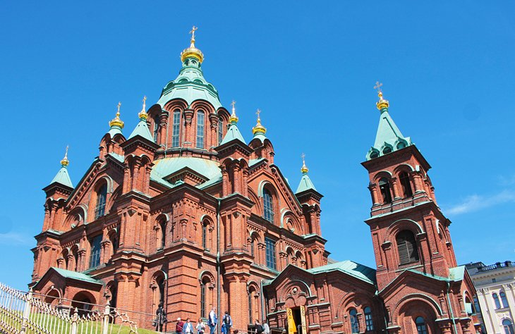
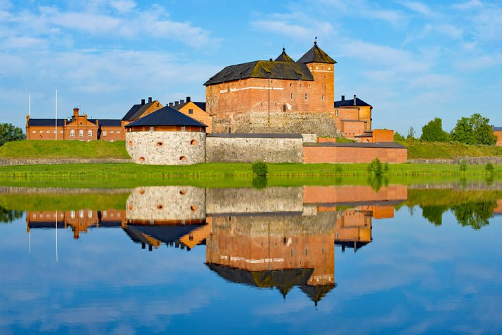

One of the world's largest sea fortresses, the 18th-century fort on Suomenlinna is a 15-minute ferry ride from Helsinki's Market Square (a mini-cruise that has lovely views of the city as a bonus attraction).
Finally, after independence was regained in 1917, the Finns took control of the fortifications and began the slow process of restoring the landmark. It was an active submarine base during World War II, and today it is a UNESCO World Heritage Site and a popular tourist attraction.
Comment:
Rovaniemi
The Arctic Circle runs across northern Finland, right through the town of Rovaniemi, giving it claim to being the Gateway to the Arctic. In the summer, this means the famous Midnight Sun.
Rovaniemi is in the center of a vast natural area of rushing rivers for canoeing, swimming, or fishing, with trails alongside them for hiking and cycling. The city is best known (ask any Finnish child) as the home of Santa Claus, right astride the Arctic Circle at Santa Claus Village. You can meet reindeer here or visit a Sami reindeer farm.
Comment:
Helsinki

Three of the top places to visit in Helsinki are churches, two of them cathedrals and the third a landmark of modern architecture. Uspensky Orthodox Cathedral rises dramatically above the east side of the harbor, its 13 green-topped spires ending in gold cupolas. This is western Europe's largest Orthodox church, its interior glowing with gold, icons, crosses, altars, and intricately decorated arches. The cathedral serves Helsinki's large Russian population, and visitors are welcome.
Comment:
Hameenlinna

Like many Finnish towns, Hämeenlinna began near a castle, in this case the 13th-century Tavastehus Castle. Its distinctive red-brick fortifications top the list of places to see in Hameenlinna. The other place you shouldn't miss seeing is Aulanko Nature Reserve. Part garden park, part forest reserve, it is the first National Urban Park in Finland.